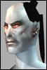

| Author | Thread |
Anikitos
Supa Leet
 | Damn... Thats some low HP ....hehe
 |
Ensignm
Leetas
 | *sigh* Spoiled brats with credit cards *sigh* |
Wibol
Leetas | We just love Metalica86
We love him like this
and over here
and over there |
Julka_Pomy
Supa Leet
 | quote:
Originally posted by Wibol
We just love Metalica86
We love him like this
and over here
and over there
Woot go clanners go!
But this tread was one funnies i ever seen. I never understand people who think that training is breaking rules.... |
Hextorr
Phear Leet
 | quote:
Originally posted by Wibol
We just love Metalica86
We love him like this
and over here
and over there
hehe good thing i saved them small and tidy, or the peeps looking them up would bust our allowed bandwith  |
Clevergoat
Leet
 | lol known metal for quite a while in the arena, great guy
As for killing an afk clanner at the arena...
SHAME ON YOU!!!! i shoulda been told 
i wanted a piece....... |
Hajkster
Supa Leet | This is just my personal opinion and my thoughts about how training should be and a logical thought why...  my two cents:
i think traininig in 25% or 0% should be alowed as you can kill the player anyway.. However in 75% and higher 100%(well not possible but anyway) you arent avaible to attack someone.. and if you train something on it you are breaking the Gas rules by being responsible to someone's death in a higher gas suppresion field... thats why i dont like training. =) its basicly breaking the gas rules...
But just my opinion of the thing. |
Wibol
Leetas | Er sorry hexx Im a bit impulsive 
Look for more shots soon I bet!
I heard
quote:
Remains of Metallica86
in red chat some tonight |
Kinkstaah
unimpressed by your post
 | I want an uber rage, that gets me so mad I no longer adhere to supression gas.
But what I *REALLY* want.. is sided 50% gas zones. In theory 50% Gas zones would mean: (I'll use Tir as an example, we'll assume Tir is sided as clan)
1) No grace period
2) Neutrals cannot be attacked, or attack anyone.
3) Omni Tek players can be attacked by Clan members. The player (preferably only the agg'ed player, and not the team) can retaliate.
4) Omni-Tek players cannot attack Clan members unless they are attacked firs.
Of course the sides would be switched if this was say, Omni-1.
I think it's a great idea, and I'd love it applied to every zone in the game that is currently 75%. Neutral zones like say, Andromeda etc should be 25%.
Tir, GTC, Varmint Woods, etc, should all be 50%.
As should other equivalent Omni-tek zones. |
hhj
Phear Leet
 |  Simply Great... Simply Great...quote:
Originally posted by Zizayu
That's the spirit!! Way to go!
1. Training mobs is a bannable offense.
Besides that it was very low... but on the other hand maybe its normal for omnis  |
Grymvarg
Leetas
 | Kinkstaah, that's an absolutely amazing idea, I love the thought of it |
stromm
Supa Leet
 | Remains of Metallica86
"Sleep with one eye open!"
Twice at tir arena tonight. Meurgen should have the screenshots on a post soon. Those who do such things like train guards on honest duelers will be held accountable for their actions.
It seems everyone who sees him now /tell's me 'i have a personal wish to kill him' 'i have a desire to kill him.' |
Yehezkel
Soleet
 | The reason why training mobs is an offense, essentially, is because you are using a game mechanic to harm another player instead of an ability normal given to your character. In theory, your character is not supposed to know about game mechanics. A person controlling the character does, but diverting the purpose of a game mechanic for an in-game goal is, by definition, cheating.
It doesn't matter what level of suppression gas is in the area. Shooting a mob and getting it to chase you is not explainable in a RP framework. The fact that you are able to train mobs like this at all is not the intention of the system.
If you were meant to be able to call guards in a city to get rid of members of the other side, there'd be a command for it. Currently, there is no command to call a guard. It's something that you're not supposed to be able to do. That's the rules for now.
And no, this is not excessively carebear or whatever you want to call it. It's just called sportsmanship. Just because you can get away with something doesn't mean that it's a legit tactic. |
Meurgen
Supa Leet | Ok I didn't think I was gonna register here but........ Funny:
Metallica wasn't AFK at the Tir Arena!
I didn't train guards on Metallica!
But he still died.
http://www.photocountry.com/users/63...dmetallica.jpg
He also happened to be in a group of 6 omnis at the time.... 3 of them died along with him, and the other two ran away.
/edit: No Firerose, your TMS won't save you when Sultanx is around. Seeing your hp drop like that WHEN you had TMS up was something i'm never going to forget. |
illfill
Soleet
 | Re: Hmmm.... quote:
Originally posted by Anikitos
Metallica86 you are one pathetic figure that does not deserve to breath the same air as FAT does.....
Yeah, and your name sucks too AOL boy! |
Letah
Supa Leet
 | Re: Ok I didn't think I was gonna register here but........ quote:
Originally posted by Meurgen
/edit: No Firerose, your TMS won't save you when Sultanx is around. Seeing your hp drop like that WHEN you had TMS up was something i'm never going to forget.
Uhm you think its special when you gank gray soldiers their TMS won't help them? did you look up that char?
It's funny that you all want to gank Metallica now, he's omni, you're clan, like duh. He has low hp, like duh he's an agent. Ask fopus about how he likes his class' hp What pride do you have saying you killed a 150ish soldier with 6 people? I really see no 'performance' in it. |
stromm
Supa Leet
| Letah -
Put a sock in it. You AND Godly both are admitted gankers, don't bash meurgen and his friends for attacking a grey - no, a grey GANKER we were trying to rid the arena of. Funny how after Godly was killed 4 times, he says he stopped ganking 'a long time ago' 1 hour after he says tir is about ganking and thats why he does it (you were present at that time) you complain like this as though there was no reason to attack you that night.
We flushed you guys out real damn good. Thats the 'performance' in it. 'Enjoy your walk back.'
And i wouldn't give a rats ass about metallica86 if he didn't do what he did to fatcrusher and say he was proud of it. |
Meurgen
Supa Leet | Re: Re: Ok I didn't think I was gonna register here but........ quote:
Originally posted by Letah
Uhm you think its special when you gank gray soldiers their TMS won't help them? did you look up that char?
It's funny that you all want to gank Metallica now, he's omni, you're clan, like duh. He has low hp, like duh he's an agent. Ask fopus about how he likes his class' hp What pride do you have saying you killed a 150ish soldier with 6 people? I really see no 'performance' in it.
*cough* grey? *cough*
Did you look up my level? Heh I didn't think so.
That wasn't why I was so proud of the moment... she was one of four casualties of that fight. Ahchew definitely wasn't grey... and he went down as well. Come to think of it... firerose was the only one of the group that was under my level! Now add to that the fact that the other 4 people in my team were lower level than me....
Sultanx and Demnspawnt did help a bit though. |
Mylast
Leetas
 | blah blah blah, ***** ***** ***** hehe |
Placidity
Phear Leet
 | quote:
Originally posted by Azzazzimon
Training mobs to kill people in 75% zone= mark on account.
Being so stupid to post on forum and brag about it= priceless
LMAO!!! |
All times are GMT.


 Last Thread Next Thread
Last Thread Next Thread 
 August 1st, 2002 12:20
August 1st, 2002 12:20